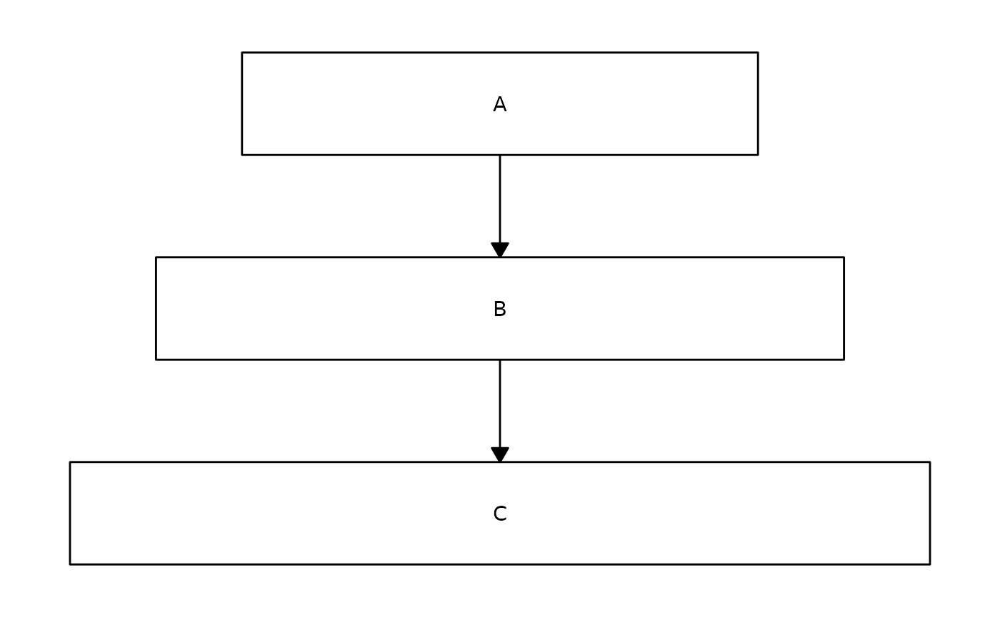
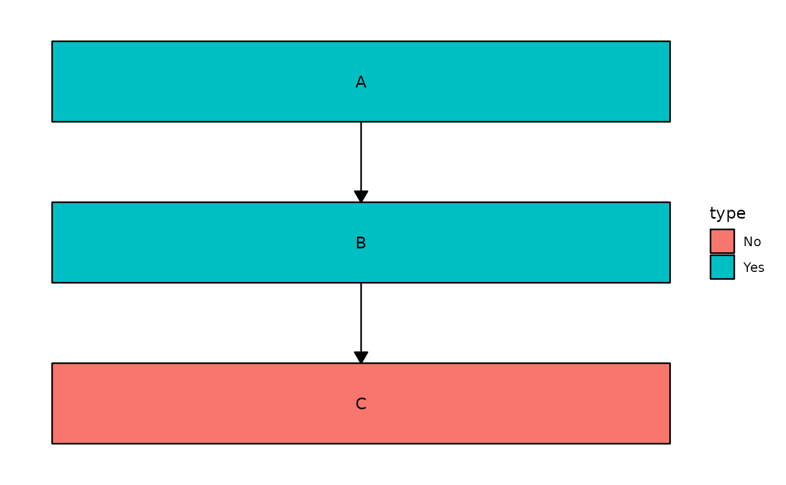
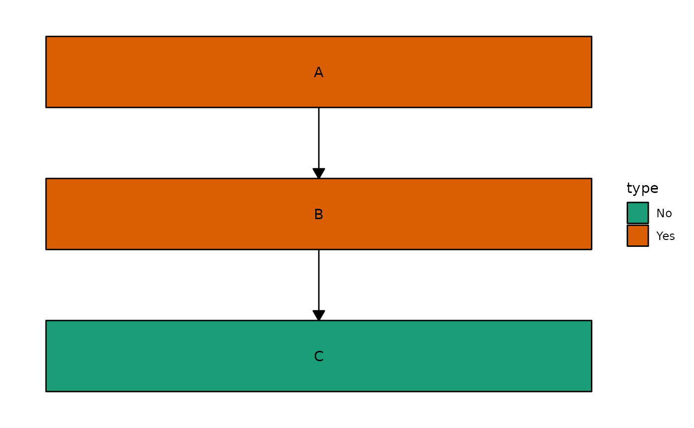
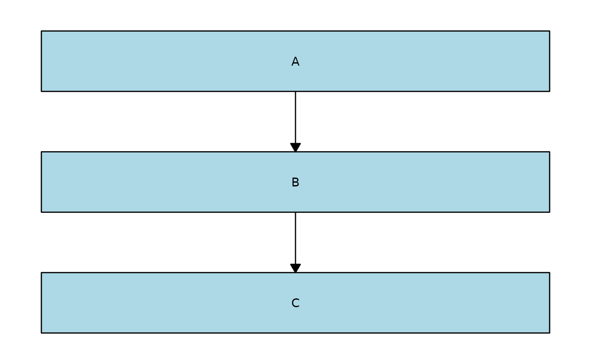
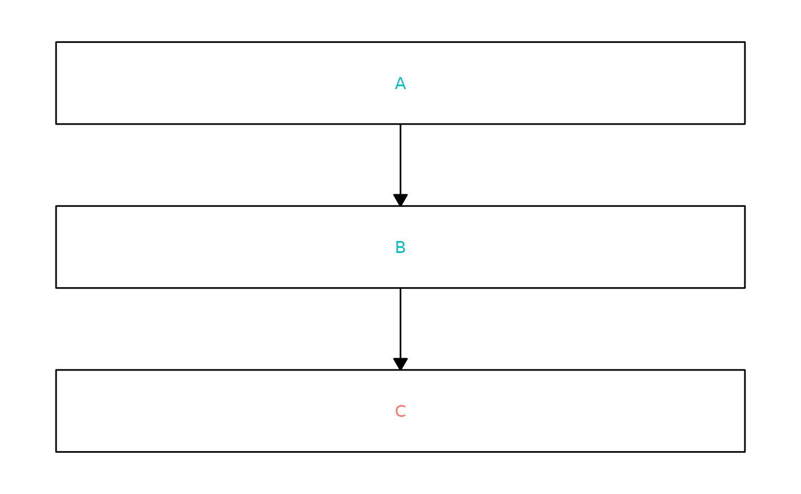

Styling Flowchart Nodes
style-nodes.RmdCreate a tibble (or data frame) with each row representing an edge.
data <- tibble::tribble(
~from, ~to,
"A", "B",
"B", "C"
)Vary the widths of the nodes by adding a column called
x_nudge to the node_data:
node_data <- tibble::tribble(
~name, ~x_nudge,
"A", 0.3,
"B", 0.4,
"C", 0.5
)
ggflowchart(data, node_data)
Similarly, the height of the boxes can vary by adding a column called
y_nudge. If neither x_nudge or
y_nudge columns are present in node_data, then
the values specified in the x_nudge or y_nudge
arguments of ggflowchart() are used for all boxes.
Vary the fill colours of the nodes by specifying a column in
node_data to colour by:
node_data <- tibble::tribble(
~name, ~type,
"A", "Yes",
"B", "Yes",
"C", "No"
)
ggflowchart(data, node_data, fill = type)
You can use existing scale_fill_* functions to change
the colours:
ggflowchart(data, node_data, fill = type) +
ggplot2::scale_fill_brewer(palette = "Dark2")
Alternatively, if you want them all to be the same colour you can specify a single colour instead:
ggflowchart(data, node_data, fill = "lightblue")
Note that quoting column names also works,
e.g. ggflowchart(data, node_data, fill = "type") gives the
same output as ggflowchart(data, node_data, fill = type).
This means that if you have a column in node_data called
"lightblue" and you want to colour all of the nodes light
blue instead of using the values in the "lightblue" column,
you would need to rename the column.
You can do something very similar to change the colour of the text in the nodes:
ggflowchart(data, node_data, text_colour = type) +
ggplot2::theme(legend.position = "none")
You will soon also be able to change the shape of nodes - keep an eye on the development version for this feature!